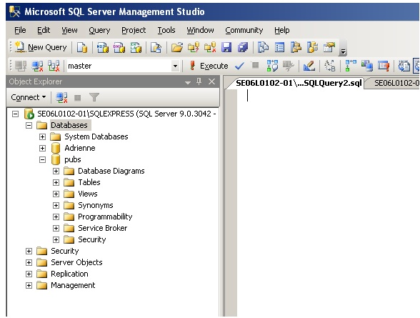
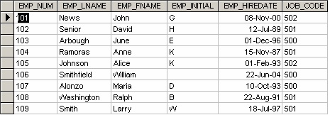

Structured Query Language
لغة الاستعلامات البنيوية
المتن الرئيسي
CREATE TABLE <tablename>
(
ColumnName, Datatype, Optional Column Constraint,
ColumnName, Datatype, Optional Column Constraint,
Optional table Constraints
);
لغة الاستعلامات البنيوية (Structured Query Language) (SQL) هي لغة قواعد بيانات صُمِّمت لإدارة البيانات المخزَّنة في نظام إدارة قواعد بيانات علائقي (relational database management system). طُوِّرت لغة SQL في البداية شركة IBM في مطلع السبعينيات من القرن الماضي (Date 1986). أما النسخة الأولى، وقد سمّيت SEQUEL (Structured English Query Language)، فقد صُمِّمت لمعالجة البيانات المخزَّنة في نظام إدارة قواعد البيانات شبه العلائقي (quasi-relational) لشركة IBM وهو System R. ثم في أواخر السبعينيات،قدَّمت شركة Relational Software Inc. التي هي الآن شركة Oracle Corporation، أول تنفيذ تجاري متاح للغة SQL وهو Oracle V2 لحاسوبات VAX.
USE SW
CREATE TABLE EMPLOYEES
(
EmployeeNo CHAR(10) NOT NULL UNIQUE,
DepartmentName CHAR(30) NOT NULL DEFAULT “Human Resources”,
FirstName CHAR(25) NOT NULL,
LastName CHAR(25) NOT NULL,
Category CHAR(20) NOT NULL,
HourlyRate CURRENCY NOT NULL,
TimeCard LOGICAL NOT NULL,
HourlySalaried CHAR(1) NOT NULL,
EmpType CHAR(1) NOT NULL,
Terminated LOGICAL NOT NULL,
ExemptCode CHAR(2) NOT NULL,
Supervisor LOGICAL NOT NULL,
SupervisorName CHAR(50) NOT NULL,
BirthDate DATE NOT NULL,
CollegeDegree CHAR(5) NOT NULL,
CONSTRAINT Employee_PK PRIMARY KEY(EmployeeNo
);
يستخدم كثير من أنظمة إدارة قواعد البيانات العلائقية (DBMS) المتاحة اليوم، مثل Oracle Database وMicrosoft SQL Server (المبيَّنة في الشكل 15.1) وMySQL وIBM DB2 وIBM Informix وMicrosoft Access، لغة SQL.
CONSTRAINT EmployeePK PRIMARY KEY(EmployeeNo)

USE SW
CREATE TABLE DEPARTMENT
(
DepartmentName Char(35) NOT NULL,
BudgetCode Char(30) NOT NULL,
OfficeNumber Char(15) NOT NULL,
Phone Char(15) NOT NULL,
CONSTRAINT DEPARTMENT_PK PRIMARY KEY(DepartmentName)
);
في نظام إدارة قواعد البيانات (DBMS)، تُستخدم لغة قواعد البيانات SQL من أجل:
USE SW
CREATE TABLE PROJECT
(
ProjectID Int NOT NULL IDENTITY (1000,100),
ProjectName Char(50) NOT NULL,
Department Char(35) NOT NULL,
MaxHours Numeric(8,2) NOT NULL DEFAULT 100,
StartDate DateTime NULL,
EndDate DateTime NULL,
CONSTRAINT ASSIGNMENT_PK PRIMARY KEY(ProjectID)
);
- إنشاء قاعدة البيانات وبنى الجداول
- القيام بأعمال إدارة البيانات الأساسية (إضافة وحذف وتعديل)
- تنفيذ استعلامات (query) معقّدة لتحويل البيانات الخام إلى معلومات مفيدة
USE SW
CREATE TABLE ASSIGNMENT
(
ProjectID Int NOT NULL,
EmployeeNumber Int NOT NULL,
HoursWorked Numeric(6,2) NULL,
);
في هذا الفصل، سنركّز على استخدام SQL لإنشاء قاعدة البيانات وبنى الجداول، أي بصفتها أساسًا لغة تعريف البيانات (data definition language) (DDL). وفي الفصل 16، سنستخدم SQL بصفتها لغة معالجة البيانات (data manipulation language) (DML) لإدراج البيانات وحذفها واختيارها وتحديثها داخل جداول قاعدة البيانات.
CREATE TABLE tblHotel
(
HotelNo Int IDENTITY (1,1),
Name Char(50) NOT NULL,
Address Char(50) NULL,
City Char(25) NULL,
)
إنشاء قاعدة البيانات
[CONSTRAINT constraint_name]
UNIQUE [CLUSTERED | NONCLUSTERED]
(col_name [, col_name2 […, col_name16]])
[ON segment_name]
عبارات DDL الأساسية في SQL هي CREATE DATABASE وCREATE/DROP/ALTER TABLE. وتُستخدم عبارة CREATE في SQL لإنشاء قاعدة البيانات وبنى الجداول.
CREATE TABLE EMPLOYEES
(
EmployeeNo CHAR(10) NOT NULL UNIQUE,
)
مثال: CREATE DATABASE SW
[CONSTRAINT constraint_name]
[FOREIGN KEY (col_name [, col_name2 […, col_name16]])]
REFERENCES [owner.]ref_table [(ref_col [, ref_col2 […, ref_col16]])]
تُنشئ عبارة SQL CREATE DATABASE SW قاعدة بيانات جديدة اسمها SW. وبعد إنشاء قاعدة البيانات، تكون الخطوة التالية إنشاء جداول قاعدة البيانات.
USE HOTEL
GO
CREATE TABLE tblRoom
(
HotelNo Int NOT NULL ,
RoomNo Int NOT NULL,
Type Char(50) NULL,
Price Money NULL,
PRIMARY KEY (HotelNo, RoomNo),
FOREIGN KEY (HotelNo) REFERENCES tblHotel
)
الصيغة العامة لأمر CREATE TABLE هي:
[CONSTRAINT constraint_name]
CHECK [NOT FOR REPLICATION] (expression)
CREATE TABLE
USE HOTEL
GO
CREATE TABLE tblRoom
(
HotelNo Int NOT NULL,
RoomNo Int NOT NULL,
Type Char(50) NULL,
Price Money NULL,
PRIMARY KEY (HotelNo, RoomNo),
FOREIGN KEY (HotelNo) REFERENCES tblHotel
CONSTRAINT Valid_Type
CHECK (Type IN (‘Single’, ‘Double’, ‘Suite’, ‘Executive’))
)
وTablename هو اسم جدول قاعدة البيانات مثل Employee. ولكل حقل في CREATE TABLE ثلاثة أجزاء (انظر أعلاه):
GO
CREATE TABLE SALESREPS
(
Empl_num Int Not Null
CHECK (Empl_num BETWEEN 101 and 199),
Name Char (15),
Age Int CHECK (Age >= 21),
Quota Money CHECK (Quota >= 0.0),
HireDate DateTime,
CONSTRAINT QuotaCap CHECK ((HireDate < “01-01-2004”) OR (Quota <=300000))
)
- ColumnName
- نوع البيانات
- قيد العمود الاختياري
[CONSTRAINT constraint_name]
DEFAULT {constant_expression | niladic-function | NULL}
[FOR col_name]
ColumnName
USE HOTEL
ALTER TABLE tblHotel
Add CONSTRAINT df_city DEFAULT ‘Vancouver’ FOR City
يجب أن يكون ColumnName فريدًا داخل الجدول. ومن أمثلة أسماء الأعمدة FirstName وLastName.
sp_addtype ssn, ‘varchar(11)’, ‘NOT NULL’
نوع البيانات
CREATE TABLE SINTable
(
EmployeeID INT Primary Key,
EmployeeSIN SIN,
CONSTRAINT CheckSIN
CHECK (EmployeeSIN LIKE
‘ [0-9][0-9][0-9] – [0-9][0-9] [0-9] – [0-9][0-9][0-9] ‘)
)
نوع البيانات، كما هو موضح أدناه، يجب أن يكون نوع بيانات نظاميًا أو نوع بيانات معرَّفًا من المستخدم. ولكثير من أنواع البيانات حجم مثل CHAR(35) أو Numeric(8,2).
USE HOTEL
GO
ALTER TABLE tblHotel
ADD CONSTRAINT unqName UNIQUE (Name)
Bit – بيانات عدد صحيح (integer) قيمتها 1 أو 0
ADD
ColumnName int IDENTITY(seed, increment)
Int – بيانات عدد صحيح (whole number) من -2^31 (-2,147,483,648) إلى 2^31 – 1 (2,147,483,647)
DROP TABLE tblHotel
Smallint – بيانات عدد صحيح من 2^15 (-32,768) إلى 2^15 – 1 (32,767)
Key Terms
DDL: abbreviation for data definition language
DML: abbreviation for data manipulation language
SEQUEL: acronym for Structured English Query Language; designed to manipulate and retrieve data stored in IBM’s quasi-relational database management system, System R
Structured Query Language (SQL): a database language designed for managing data held in a relational database management system
Tinyint – بيانات عدد صحيح من 0 إلى 255
Exercises
Using the information for the Chapter 9 exercise, implement the schema using Transact SQL (show SQL statements for each table). Implement the constraints as well.
Create the table shown here in SQL Server and show the statements you used.
Table: Employee
ATTRIBUTE (FIELD) NAME
DATA DECLARATION
EMP_NUM
CHAR(3)
EMP_LNAME
VARCHAR(15)
EMP_FNAME
VARCHAR(15)
EMP_INITIAL
CHAR(1)
EMP_HIREDATE
DATE
JOB_CODE
CHAR(3)
Having created the table structure in question 2, write the SQL code to enter the rows for the table shown in Figure 15.1.
IMAGE1END Figure 15.2. Employee table with data for questions 4-10, by A. Watt.
Use Figure 15.2 to answer questions 4 to 10.
Write the SQL code to change the job code to 501 for the person whose personnel number is 107. After you have completed the task, examine the results, and then reset the job code to its original value.
Assuming that the data shown in the Employee table have been entered, write the SQL code that lists all attributes for a job code of 502.
Write the SQL code to delete the row for the person named William Smithfield, who was hired on June 22, 2004, and whose job code classification is 500. (Hint: Use logical operators to include all the information given in this problem.)
Add the attributes EMP_PCT and PROJ_NUM to the Employee table. The EMP_PCT is the bonus percentage to be paid to each employee.
Using a single command, write the SQL code that will enter the project number (PROJ_NUM) = 18 for all employees whose job classification (JOB_CODE) is 500.
Using a single command, write the SQL code that will enter the project number (PROJ_NUM) = 25 for all employees whose job classification (JOB_CODE) is 502 or higher.
Write the SQL code that will change the PROJ_NUM to 14 for those employees who were hired before January 1, 1994, and whose job code is at least 501. (You may assume that the table will be restored to its original condition preceding this question.)
Also see Appendix C: SQL Lab with Solution
Decimal – بيانات عددية ذات دقة ومقياس ثابتين من -10^38 -1 إلى 10^38
Numeric – مرادف للكلمة decimal
Timestamp – رقم فريد على مستوى قاعدة البيانات
Uniqueidentifier – معرّف فريد عالميًا (GUID)
Money – قيم بيانات نقدية من -2^63 (-922,337,203,685,477.5808) إلى 2^63 – 1 (+922,337,203,685,477.5807)، بدقة تصل إلى جزء من عشرة آلاف من الوحدة النقدية
Smallmoney – قيم بيانات نقدية من -214,748.3648 إلى +214,748.3647، بدقة تصل إلى جزء من عشرة آلاف من الوحدة النقدية
Float – بيانات أرقام بدقة الفاصلة العائمة من -1.79E + 308 إلى 1.79E + 308
Real – بيانات أرقام بدقة الفاصلة العائمة من -3.40E + 38 إلى 3.40E + 38
Datetime – بيانات التاريخ والوقت من 1 يناير 1753 إلى 31 ديسمبر 9999، بدقة مقدارها ثلاثُمئة جزء من الثانية، أي 3.33 ميلي ثانية
Smalldatetime – بيانات التاريخ والوقت من 1 يناير 1900 إلى 6 يونيو 2079، بدقة مقدارها دقيقة واحدة
Char – بيانات محارف غير Unicode بطول ثابت لا يتجاوز 8,000 محرف
Varchar – بيانات غير Unicode بطول متغير لا يتجاوز 8,000 محرف
Text – بيانات غير Unicode بطول متغير لا يتجاوز 2^31 – 1 (2,147,483,647) محرف
Binary – بيانات ثنائية بطول ثابت لا يتجاوز 8,000 بايت
Varbinary – بيانات ثنائية بطول متغير لا يتجاوز 8,000 بايت
Image – بيانات ثنائية بطول متغير لا يتجاوز 2^31 – 1 (2,147,483,647) بايت
قيود الأعمدة الاختيارية
قيود الأعمدة الاختيارية (Optional ColumnConstraints) هي NULL وNOT NULL وUNIQUE وPRIMARY KEY وDEFAULT، وتُستخدم لتهيئة قيمة للسجل الجديد. ويشير قيد العمود NULL إلى أن القيم الفارغة (null) مسموح بها، أي أنه يمكن إنشاء صف من دون قيمة لهذا العمود. أما قيد العمود NOT NULL فيشير إلى أنه يجب تزويد قيمة عند إنشاء صف جديد.
وللتوضيح، سنستخدم عبارة SQL CREATE TABLE EMPLOYEES لإنشاء جدول الموظفين (employees) بـ 16 خاصية أو حقلًا.
USE SW CREATE TABLE EMPLOYEES ( EmployeeNo CHAR(10) NOT NULL UNIQUE, DepartmentName CHAR(30) NOT NULL DEFAULT “Human Resources”, FirstName CHAR(25) NOT NULL, LastName CHAR(25) NOT NULL, Category CHAR(20) NOT NULL, HourlyRate CURRENCY NOT NULL, TimeCard LOGICAL NOT NULL, HourlySalaried CHAR(1) NOT NULL, EmpType CHAR(1) NOT NULL, Terminated LOGICAL NOT NULL, ExemptCode CHAR(2) NOT NULL, Supervisor LOGICAL NOT NULL, SupervisorName CHAR(50) NOT NULL, BirthDate DATE NOT NULL, CollegeDegree CHAR(5) NOT NULL, CONSTRAINT Employee_PK PRIMARY KEY(EmployeeNo );
الحقل الأول هو EmployeeNo ومن نوعه CHAR. وبالنسبة إلى هذا الحقل، فإن طول الحقل 10 محارف، ولا يمكن للمستخدم ترك هذا الحقل فارغًا (NOT NULL).
وبالمثل، الحقل الثاني هو DepartmentName ومن نوع CHAR بطول 30. وبعد تعريف جميع أعمدة الجدول، يُستخدم قيد جدول (table constraint)، يحدده الكلمة CONSTRAINT، لإنشاء المفتاح الأساسي (primary key):
CONSTRAINT EmployeePK PRIMARY KEY(EmployeeNo)
وسنتناول خاصية القيد (constraint) بمزيد من التفصيل لاحقًا في هذا الفصل.
وبالمثل أيضًا، يمكننا إنشاء جدول Department وجدول Project وجدول Assignment باستخدام أمر DDL الخاص بـ SQL وهو CREATE TABLE، كما هو موضح في المثال أدناه.
USE SW CREATE TABLE DEPARTMENT ( DepartmentName Char(35) NOT NULL, BudgetCode Char(30) NOT NULL, OfficeNumber Char(15) NOT NULL, Phone Char(15) NOT NULL, CONSTRAINT DEPARTMENT_PK PRIMARY KEY(DepartmentName) );
في هذا المثال، أُنشئ جدول للمشاريع بسبعة حقول: ProjectID وProjectName وDepartment وMaxHours وStartDate وEndDate.
USE SW CREATE TABLE PROJECT ( ProjectID Int NOT NULL IDENTITY (1000,100), ProjectName Char(50) NOT NULL, Department Char(35) NOT NULL, MaxHours Numeric(8,2) NOT NULL DEFAULT 100, StartDate DateTime NULL, EndDate DateTime NULL, CONSTRAINT ASSIGNMENT_PK PRIMARY KEY(ProjectID) );
وفي هذا المثال الأخير، أُنشئ جدول للإسنادات (assignment) بثلاثة حقول: ProjectID وEmployeeNumber وHoursWorked. ويُستخدم جدول الإسنادات لتسجيل من (EmployeeNumber) وكم من الوقت (HoursWorked) عمل فيه موظف في المشروع المعيّن (ProjectID).
USE SW CREATE TABLE ASSIGNMENT ( ProjectID Int NOT NULL, EmployeeNumber Int NOT NULL, HoursWorked Numeric(6,2) NULL, );
قيود الجدول
تُحدَّد قيود الجدول بالكلمة المفتاحية CONSTRAINT، ويمكن استخدامها لتطبيق القيود المختلفة الموصوفة أدناه.
قيد IDENTITY
يمكننا استخدام قيد العمود الاختياري IDENTITY لتوفير قيمة فريدة متزايدة لذلك العمود. وتُستخدم أعمدة الهوية (identity) غالبًا مع قيود PRIMARY KEY لتكون معرّفًا فريدًا للصف في الجدول. ويمكن إسناد خاصية IDENTITY إلى عمود من نوع tinyint أو smallint أو int أو decimal أو numeric. ويمتنع هذا القيد:
- توليد أرقام متسلسلة
- فرض سلامة الكيان (entity integrity)
- أن تكتسب خاصية IDENTITY أكثر من عمود واحد
- من أن يُعرَّف من نوع بيانات عدد صحيح أو numeric أو decimal
- من تحديث عمود يحمل خاصية IDENTITY
- من أن يحتوي على قيم NULL
- من ربط قيود افتراضية (default constraints) أو قيم افتراضية بالعمود
وبالنسبة إلى IDENTITY[(seed, increment)] فإن:
- Seed – القيمة الابتدائية لعمود الهوية
- Increment – القيمة التي تُضاف إلى آخر قيمة في عمود الهوية
وسنستخدم مثالًا آخر لقاعدة البيانات لتوضيح عبارات DDL الخاصة بـ SQL أكثر من ذلك بإنشاء الجدول tblHotel في قاعدة بيانات HOTEL هذه.
CREATE TABLE tblHotel ( HotelNo Int IDENTITY (1,1), Name Char(50) NOT NULL, Address Char(50) NULL, City Char(25) NULL, )
قيد UNIQUE
يمنع قيد UNIQUE إدخال قيم مكرَّرة في العمود.
- تُستخدم قيود PK وUNIQUE معًا لفرض سلامة الكيان.
- يمكن تعريف قيود UNIQUE متعددة لجدول واحد.
- عند إضافة قيد UNIQUE إلى جدول قائم، تُتحقَّق البيانات الموجودة دائمًا.
- يمكن وضع قيد UNIQUE على أعمدة تقبل القيم الفارغة (nulls). ولا يمكن أن يكون أكثر من صف واحد بقيمة NULL.
- ينشئ قيد UNIQUE فهرسًا (index) فريدًا تلقائيًا على العمود المحدَّد.
هذه هي الصيغة العامة لقيد UNIQUE:
[CONSTRAINT constraint_name] UNIQUE [CLUSTERED | NONCLUSTERED] (col_name [, col_name2 […, col_name16]]) [ON segment_name]
وهذا مثال على استخدام قيد UNIQUE.
CREATE TABLE EMPLOYEES ( EmployeeNo CHAR(10) NOT NULL UNIQUE, )
قيد FOREIGN KEY (مفتاح أجنبي)
يعرّف قيد FOREIGN KEY (FK) عمودًا أو مجموعة أعمدة تقابل قيمها المفتاح الأساسي (PRIMARY KEY) (PK) لجدول آخر.
- تُحدَّث قيم المفتاح الأجنبي (FK) تلقائيًا عند تحديث قيم المفتاح الأساسي (PK) في الجدول المرتبط.
- يجب أن تشير قيود FK إلى PK أو قيد UNIQUE في جدول آخر.
- يجب أن يكون عدد أعمدة FK مساويًا لعدد أعمدة PK أو القيد UNIQUE.
- إذا استُخدم خيار WITH NOCHECK فإن قيد FK لن يتحقق من البيانات الموجودة في الجدول.
- لا يُنشأ أي فهرس على الأعمدة المشاركة في قيد FK.
هذه هي الصيغة العامة لقيد FOREIGN KEY:
[CONSTRAINT constraint_name] [FOREIGN KEY (col_name [, col_name2 […, col_name16]])] REFERENCES [owner.]ref_table [(ref_col [, ref_col2 […, ref_col16]])]
في هذا المثال، الحقل HotelNo في الجدول tblRoom هو مفتاح أجنبي (FK) يشير إلى الحقل HotelNo في الجدول tblHotel الذي سبق عرضه.
USE HOTEL GO CREATE TABLE tblRoom ( HotelNo Int NOT NULL , RoomNo Int NOT NULL, Type Char(50) NULL, Price Money NULL, PRIMARY KEY (HotelNo, RoomNo), FOREIGN KEY (HotelNo) REFERENCES tblHotel )
قيد CHECK
يقيد قيد CHECK القيم التي يمكن إدخالها في الجدول.
- يمكن أن يحتوي على شروط بحث مشابهة لعبارة WHERE.
- يمكن أن يشير إلى أعمدة في الجدول نفسه.
- يجب أن تُقيَّم قاعدة التحقق من البيانات الخاصة بقيد CHECK إلى تعبير منطقي (boolean expression).
- يمكن أن يُعرَّف لعمود له قاعدة مرتبطة به.
هذه هي الصيغة العامة لقيد CHECK:
[CONSTRAINT constraint_name] CHECK [NOT FOR REPLICATION] (expression)
في هذا المثال، يقتصر الحقل Type على الأنواع ‘Single’ و‘Double’ و‘Suite’ أو ‘Executive’ فقط.
USE HOTEL GO CREATE TABLE tblRoom ( HotelNo Int NOT NULL, RoomNo Int NOT NULL, Type Char(50) NULL, Price Money NULL, PRIMARY KEY (HotelNo, RoomNo), FOREIGN KEY (HotelNo) REFERENCES tblHotel CONSTRAINT Valid_Type CHECK (Type IN (‘Single’, ‘Double’, ‘Suite’, ‘Executive’)) )
وفي هذا المثال الثاني، يجب أن يكون تاريخ توظيف الموظف قبل 1 يناير 2004، أو أن يكون لديه حد أقصى للراتب قدره 300,000 دولار.
GO CREATE TABLE SALESREPS ( Empl_num Int Not Null CHECK (Empl_num BETWEEN 101 and 199), Name Char (15), Age Int CHECK (Age >= 21), Quota Money CHECK (Quota >= 0.0), HireDate DateTime, CONSTRAINT QuotaCap CHECK ((HireDate < “01-01-2004”) OR (Quota <=300000)) )
قيد DEFAULT
يُستخدم قيد DEFAULT لتزويد قيمة تُضاف تلقائيًا إلى العمود إذا لم يزوّد المستخدم بقيمة.
- يمكن أن يكون للعمود قيد DEFAULT واحد فقط.
- لا يمكن استخدام قيد DEFAULT على الأعمدة التي من نوع timestamp أو التي تحمل خاصية identity.
- تُربط قيود DEFAULT بالعمود تلقائيًا عند إنشائها.
الصيغة العامة لقيد DEFAULT هي:
[CONSTRAINT constraint_name] DEFAULT {constant_expression | niladic-function | NULL} [FOR col_name]
يضبط هذا المثال القيمة الافتراضية لحقل المدينة على ‘Vancouver’.
USE HOTEL ALTER TABLE tblHotel Add CONSTRAINT df_city DEFAULT ‘Vancouver’ FOR City
الأنواع المعرَّفة من المستخدم
دائمًا تستند الأنواع المعرَّفة من المستخدم (user defined types) إلى نوع بيانات يوفّره النظام. وهي تستطيع فرض سلامة البيانات وتسمح بالقيم الفارغة (nulls).
ولإنشاء نوع بيانات معرَّف من المستخدم في SQL Server، اختر الأنواع ضمن “Programmability” في قاعدة بياناتك. ثم انقر بزر الفأرة الأيمن واختر ‘New’ –>‘User-defined data type’، أو نفّذ الإجراء المخزَّنة في النظام sp_addtype. وبعد ذلك اكتب:
sp_addtype ssn, ‘varchar(11)’, ‘NOT NULL’
وهذا سيضيف نوع بيانات معرَّفًا من المستخدم جديدًا اسمُه SIN من تسعة محارف.
وفي هذا المثال، يستخدم الحقل EmployeeSIN نوع البيانات المعرَّف من المستخدم SIN.
CREATE TABLE SINTable ( EmployeeID INT Primary Key, EmployeeSIN SIN, CONSTRAINT CheckSIN CHECK (EmployeeSIN LIKE ‘ [0-9][0-9][0-9] – [0-9][0-9] [0-9] – [0-9][0-9][0-9] ‘) )
ALTER TABLE
يمكنك استخدام عبارات ALTER TABLE لإضافة القيود وحذفها.
- تتيح ALTER TABLE إزالة الأعمدة.
- عند إضافة قيد، تُفحص جميع البيانات القائمة للتأكد من عدم وجود مخالفات.
في هذا المثال، نستخدم عبارة ALTER TABLE مع الخاصية IDENTITY على حقل ColumnName.
USE HOTEL GO ALTER TABLE tblHotel ADD CONSTRAINT unqName UNIQUE (Name)
استخدم عبارة ALTER TABLE لإضافة عمود يحمل خاصية IDENTITY، مثل ALTER TABLE TableName.
ADD ColumnName int IDENTITY(seed, increment)
DROP TABLE
ستزيل عبارة DROP TABLE جدولًا من قاعدة البيانات. تأكد من أن قاعدة البيانات الصحيحة هي المحدَّدة.
DROP TABLE tblHotel
سيؤدي تنفيذ عبارة SQL DROP TABLE أعلاه إلى إزالة الجدول tblHotel من قاعدة البيانات.
DDL: اختصار للغة تعريف البيانات
DML: اختصار للغة معالجة البيانات
SEQUEL: اختصار لعبارة Structured English Query Language؛ صُمِّمت لمعالجة البيانات المخزَّنة في نظام إدارة قواعد البيانات شبه العلائقي لشركة IBM وهو System R
لغة الاستعلامات البنيوية (Structured Query Language) (SQL): لغة قواعد بيانات صُمِّمت لإدارة البيانات المخزَّنة في نظام إدارة قواعد بيانات علائقي
استخدم معلومات تمرين الفصل 9 لتنفيذ المخطط (schema) باستخدام Transact SQL (اعرض عبارات SQL لكل جدول). ونفّذ القيود أيضًا. وأنشئ الجدول الموضَّح هنا في SQL Server واعرض العبارات التي استخدمتها. الجدول: Employee
| اسم الخاصية (الحقل) | تعريف البيانات |
|---|---|
| EMP_NUM | CHAR(3) |
| EMP_LNAME | VARCHAR(15) |
| EMP_FNAME | VARCHAR(15) |
| EMP_INITIAL | CHAR(1) |
| EMP_HIREDATE | DATE |
| JOB_CODE | CHAR(3) |
بعد إنشاء بنية الجدول في السؤال 2، اكتب شيفرة SQL لإدخال الصفوف في الجدول الموضَّح في الشكل 15.1.

استخدم الشكل 15.2 للإجابة عن الأسئلة من 4 إلى 10. اكتب شيفرة SQL لتغيير رمز الوظيفة (job code) إلى 501 للموظف الذي رقمه الوظيفي (personnel number) هو 107. وبعد إتمام المهمة، افحص النتائج، ثم أعِد رمز الوظيفة إلى قيمته الأصلية. وبافتراض أن البيانات المبيَّنة في جدول Employee قد أُدخلت، اكتب شيفرة SQL التي تسرد جميع الخصائص لرمز وظيفة قدره 502. اكتب شيفرة SQL لحذف صف الشخص المعروف باسم William Smithfield، الذي توظّف في 22 يونيو 2004، والذي تصنيف رمز وظيفته هو 500. (تلميح: استخدم المعاملات المنطقية (logical operators) لتضمّن كل المعطيات الواردة في هذه المسألة.) أضف الخاصيتين EMP_PCT وPROJ_NUM إلى جدول Employee. وتُعدّ EMP_PCT نسبة المكافأة التي تُدفع لكل موظف. باستخدام أمر واحد، اكتب شيفرة SQL التي تُدخل رقم المشروع (PROJ_NUM) = 18 لكل الموظفين الذين تصنيف وظيفتهم (JOB_CODE) هو 500. باستخدام أمر واحد، اكتب شيفرة SQL التي تُدخل رقم المشروع (PROJ_NUM) = 25 لكل الموظفين الذين تصنيف وظيفتهم (JOB_CODE) هو 502 أو أعلى. اكتب شيفرة SQL التي تغيّر قيمة PROJ_NUM إلى 14 لهؤلاء الموظفين الذين توظّفوا قبل 1 يناير 1994، والذين رمز وظيفتهم 501 على الأقل. (يمكنك افتراض أن الجدول سيُعاد إلى حالته الأصلية السابقة لهذا السؤال.) وانظر أيضًا الملحق C: مختبر SQL مع الحل
المراجع
Date, C.J. Relational Database Selected Writings. Reading: Mass: Addison-Wesley Publishing Company Inc., 1986, p. 269-311.